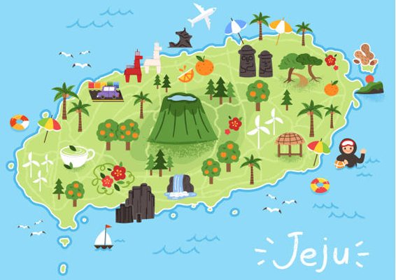

온 가족이 같이 즐겁게 갈 수 있는 국내 여행지에는 어디가 있을까? 여러 여행지 중에서 손꼽히는 곳은 바로 제주도일 것이다. 제주도에서만 맛볼 수 있는 맛있으면서 독특한 제주도 먹거리 음식들이 꽤 있다. 여행을 계획하여 제주도 먹거리를 찾고 있는 가족들에게 도움이 되길 바란다.
고기국수는 제주도에서만 맛볼 수 있는 음식 중 하나로 손꼽힌다. 돼지고기의 수육이 올라가서 고기국수라고 불리는데, 돼지 뼈를 우린 국물을 이용해서 약간 일본 라멘 느낌도 난다. 제주도민들 사이에서 유명하므로 제주도에는 고기국수 맛집이 많다.
제주시에서 유명한 고기국수 맛집 양대 산맥인 자매 국수를 소개한다. 건물을 새로 지을 만큼 엄청난 인기를 유지하고 있는 곳으로서, 고기국수뿐 아니라 비빔국수, 돔베고기, 물만두를 함께 판매하고 있다. 비교적 주차시설이 편하고 기계를 통해 대기표를 받아 편리한 곳이다.
고기국수 : 9,000원
제주 제주시 탑공로 11길 6
운영시간 : 09:00 ~ 18:00
휴식시간 : 14:20 ~ 16:00
매주 수요일 휴무

갈치는 서울에서도 충분히 먹을 수 있는 음식이지만, 우리가 먹는 일반 자갈치와 다르다. 제주도의 자갈치는 그물로 잡아서 살이 다 까져 갈색 빛을 띠지만, 제주도의 은갈치는 살에 상처가 없어서 살이 은색을 띤다고 한다. 그래서 더욱 싱싱하고 맛있는 것으로 유명하다.
온 가족이 먹기 좋은 갈치, 통갈치 요리 전문점인 춘심이네를 소개한다. 갈치 한 마리를 통째로 구워서 제공되는 갈치구이 전문점으로서, 가족 단위 여행객들이 이용하기 좋다. 갈치조림 또한 뼈 없이 제공되어 아이들도 먹을 수 있게 제공된다. 뼈를 모두 발라주기 때문에 아이들이 먹기에도 편하다. 아이들과 방문하는데 나도 편하게 먹고 싶은 분들께 권한다.
4인 세트 통갈치구이+은갈치 조림 : 149,000원
제주 서귀포시 안덕면 창천 중앙로 24번 길 16
운영시간 : 10:30 ~ 20:00
휴식시간 : 15:30 ~ 17:00
대부분 제주도 음식이 서울에서도 충분히 먹을 수 있지만, 전복이나 해물 같은 것들은 배에서 싱싱하게 잡아서 바로 상에 올라오는 특혜를 누릴 수가 있다. 그중 하나가 바로 전복 뚝배기이다. 서울에서는 전복뚝배기를 시키면 전복이 2개 나오는데, 제주도에서는 5개가 나올 만큼 푸근한 인심을 느낄 수 있다.
이번에는 대정읍, 모슬포항 근처의 전복뚝배기 맛집을 소개하고자 한다. 바로 한라 전복이라는 곳인데, 전복전문점으로서 신선한 전복이 들어간 전복뚝배기가 맛있는 곳이다. 작은 식당으로 가성비가 좋은 것도 특징이며, 전복을 좋아한다면 꼭 가볼 것을 권한다. 이곳에서는 뚝배기뿐 아니라 전복죽, 돌솥밥, 물회, 라면, 버터구이, 전복회 등 다양한 전복 음식을 맛볼 수 있다.
전복 뚝배기 : 12,000원
제주 서귀포시 대정읍 대한로 33
운영시간 : 09:00 ~ 20:00
매주 목요일 휴무
보말칼국수는 생소하게 들릴 수 있으나 제주도에서만 먹을 수 있는 음식 중 하나이다. 보말은 해초를 먹고 자라는 바다 고동의 제주 방언인데, 이런 보말을 넣고 만든 칼국수를 보말 칼국수라고 한다. 그리고 이 보말은 죽으로 만들면 보말죽이 된다. 속이 든든하고 칼칼한 맛이 특징이며, 아침 해장이나 이른 점심으로 많이 먹는다.
이번에 소개할 보말칼국수 맛집은 송악산과 산방산 보말칼국수 맛집인 형제섬 보말칼국수이다. 직접 수타 반죽한 보말칼국수와 전복 내장이 듬뿍 들어간 보말죽이 맛있는 곳으로, 별미로는 매생이전이 있다. 다양한 메뉴를 세트 구성으로 즐길 수 있으며, 혼밥 세트도 판매하고 있어 좋은 곳이다.
보말 전복 칼국수 : 10,000원
서귀포시 대정읍 형제 해안로 318 1층
운영시간 : 07:00 ~ 16:00
매주 화요일 휴무